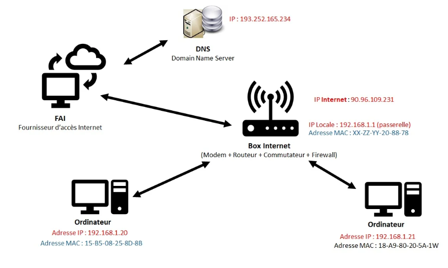
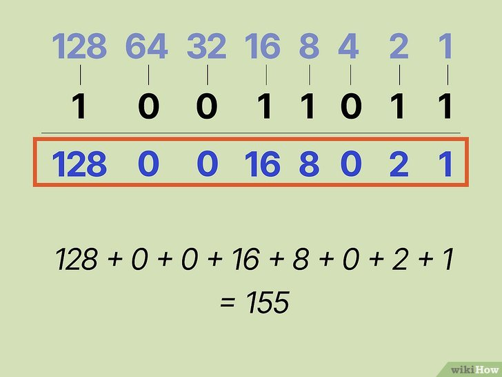
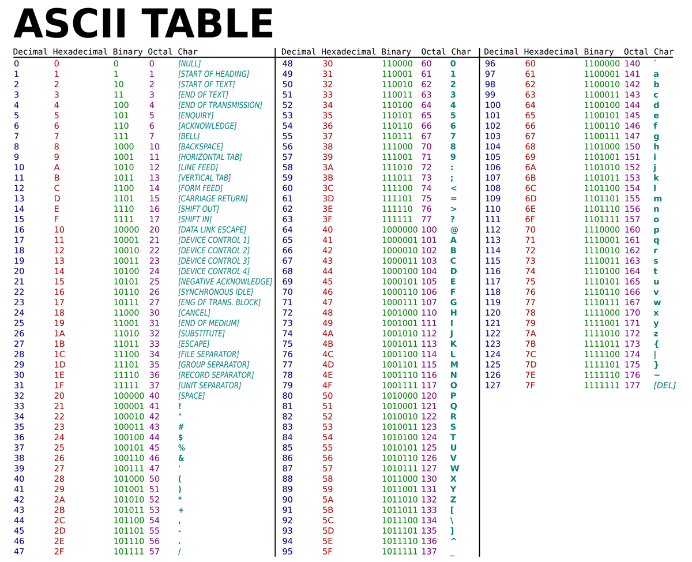

Cours Réseau – 18 Septembre 2025
Adresse IP et DNS
L’adresse IP sert à identifier un point sur un réseau. Chaque équipement doit posséder une adresse unique :
- Deux équipements ne peuvent pas avoir la même IP simultanément
- Il existe des IP statiques et dynamiques
Schéma simplifié réseau LAN et Internet avec IP :
DNS (Domain Name System) : traduit les noms de domaine (ex : google.com) en adresses IP.
Machines virtuelles et ligne de commande
Les environnements préconfigurés des hébergeurs sont rarement parfaitement adaptés, d’où la nécessité de construire sa propre structure réseau et serveur.
- Exécution de machines virtuelles via ligne de commande
- Déploiement d’applications et tests en ligne de commande
Utilisation de CMD (Invite de commandes)
- Commande
ipconfigpour observer les cartes réseau et IP attribuées - Passerelle par défaut : IP interne du routeur
- Le routeur utilise son IP publique pour accéder à Internet et gérer les flux demande/réponse
- Commande
ping: tester la disponibilité d’une adresse (ex :ping google.com)
Astuce
Pour interpréter ipconfig /all :
- Adresse IPv4 : IP locale attribuée à la carte réseau
- Passerelle par défaut : adresse IP du routeur pour sortir du réseau local
- Adresse physique : MAC unique de la carte réseau
- Serveurs DNS : adresses des serveurs utilisés pour résoudre les noms de domaine
Cette commande permet de vérifier que la machine est correctement configurée pour communiquer sur le réseau et accéder à Internet.
Outils pratiques : Angry IP Scanner pour scanner les adresses IP sur un réseau.
Exemple : 172.16.1.254 – IP pour changer le mot de passe Wi-Fi via interface de gestion du routeur.(sur réseau mns)
Plages IP et octets
Une adresse IP comporte 4 nombres (0 à 255) – chaque nombre = 1 octet :
- 0.0.0.0 → 255.255.255.255
- Chaque octet correspond à 8 positions binaires : 00000000 = 0 à 11111111 = 255
Comparaison binaire / décimal :
ASCII et codage binaire
Le codage ASCII permet de représenter les caractères (alphabet, chiffres, symboles) en binaire.
Exemple de table ASCII :
Ce codage est essentiel pour que les ordinateurs puissent stocker et transmettre les informations textuelles.
Stockage : disques durs et CD-ROM
Les disques durs et CD-ROM stockent les informations en octets. Chaque octet est l’unité de base de l’information numérique :
- Lecture et écriture d’octets
- Organisation des fichiers et répertoires
- CD-ROM : stockage optique, lecture via laser
Film recommandé : "Nos ordinateurs ont-ils la mémoire courte" pour comprendre la gestion de la mémoire et du stockage.